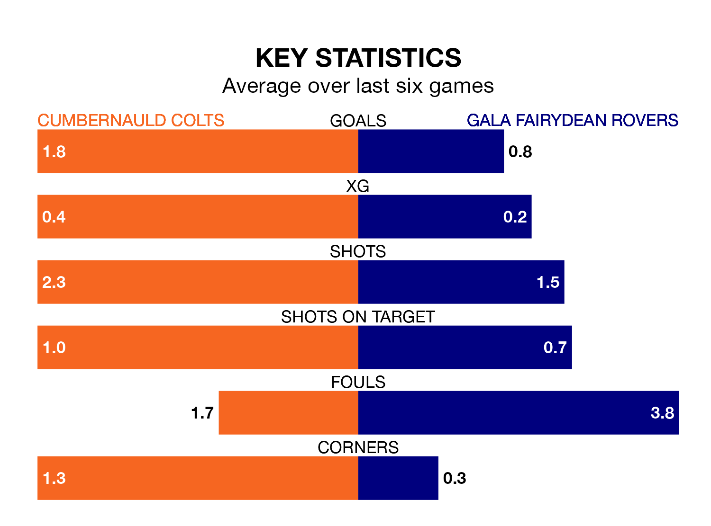

Relegation candidates Gala Fairydean Rovers face a challenge away against high-flying Cumbernauld Colts at the Broadwood Stadium on Saturday.
Gala Fairydean Rovers are 16th in the Lowland Football League table, and have picked up nine wins and five draws in their 33 games to date.
Colts, meanwhile, are third in the standings with 62 points, having won 18 and drawn eight, and are 16 points behind table-toppers East Kilbride.
With 68 goals in 33 games so far this season, Cumbernauld Colts are scoring more than average in the league with 2.1 goals per game. And they are conceding fewer than average, letting in 41 goals at a rate of 1.2 per game.
Gala Fairydean, meanwhile, are below average scorers, with 1.3 goals per game, compared to a league average of 1.7. They have conceded 2.6 goals per game.
In the last 10 years, Cumbernauld Colts and Gala Fairydean have played each other on 13 occasions. Cumbernauld Colts won four of them, Gala Fairydean five, and they drew four times.
On average, Colts scored 2.0 goals and Gala Fairydean 1.8 in those matches.
Their last meeting was on October 21, when Cumbernauld Colts won 4-1 away.
Colts are in mixed form in the Lowland Football League, with two wins and two draws from their last six games.
With a win and a draw over that period, Rovers' form is worse – they have taken four points from 18, compared to the hosts' eight.
Cumbernauld Colts's last match was on April 13, a 4-0 win against Edinburgh University.
Gala Fairydean lost 3-0 against Edusport Academy last time out, also on April 13.
Updated: 15:40 (UTC), 18/04/24